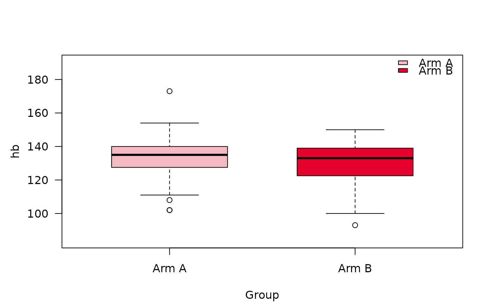
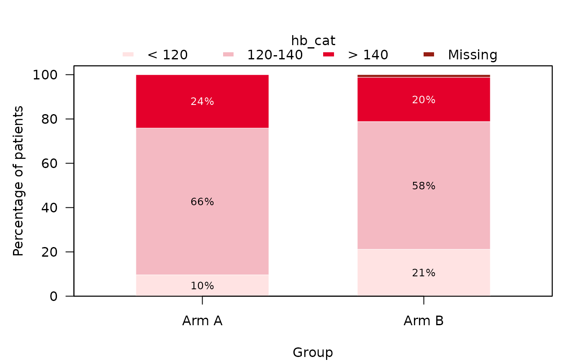

Produces the summary table of summaryTable() and one plot per variable,
or either of them alone (see type): a boxplot for continuous variables
(boxplotSCI()) and a
stacked barplot for categorical and dichotomous ones
(stackedbarplotSCI()). The type of each plot follows the type the
variable has in the table, so that table and plots always agree.
Usage
summarizeSCI(
data,
vars = NULL,
group = NULL,
labels = NULL,
stat_cont = "median_range",
stat_cat = "n_percent",
missing = TRUE,
missing_percent = TRUE,
missing_text = "Missing",
type = c("both", "table", "plot"),
plot_args = list(),
as_flex_table = TRUE,
border = TRUE,
word_output = FALSE,
file_path = paste0("SummaryTable_", format(Sys.Date(), "%Y%m%d"), ".docx"),
...
)Arguments
- data
A data frame or tibble containing the data to be summarized.
- vars
Variables to include in the summary table. Need to be specified with quotes, e.g.
"age"orc("age", "response"). Default to all variables present in the data exceptgroup.- group
A single column from
data. Need to be specified with quotes, e.g."treatment". Summary statistics will be stratified according to this variable. Default to NULL.- labels
A list containing the labels that should be used for the variables in the table. If NULL, labels are automatically taken from the dataset. If no label present, the variable name is taken.
- stat_cont
Summary statistic to display for continuous variables. Options include "median_IQR", "median_range" (default), "mean_sd", "mean_se" and "geomMean_sd". "geomMean_sd" shows the geometric mean with the geometric standard deviation,
exp(sd(log(x))), bothNAif a value is zero or negative. The geometric SD is a factor close to 1 and is shown with at least 2 decimals.- stat_cat
Summary statistic to display for categorical variables. Options include "n_percent" (default) and "n", and "n_N".
- missing
Logical. If TRUE (default), the missing values are shown.
- missing_percent
Indicates whether percentages for missings are shown (TRUE, default) or not (FALSE) for categorical variables. If "both", then both options are displayed next to each other.
- missing_text
String indicating text shown on missing row. Default to "Missing".
- type
What to produce:
"both"(the default) the table and a plot per variable,"table"the table alone, or"plot"the plots alone. The table is built in every case, since it decides the type of each plot.- plot_args
A named list of further arguments for the plotting functions, e.g.
list(risk_table = TRUE, col = c("grey", "black")). Each plot receives the arguments its function has, as inboxplotSCI()andstackedbarplotSCI(); an argument no plot uses gives a warning. For example,stat_footnote = TRUEadds a footnote saying what each plot shows (the box and whiskers, or the denominator of the percentages).- as_flex_table
Logical. If TRUE (default) the gtsummary object is converted to a flextable object. Useful when rendering to Word.
- border
Logical. If TRUE, a border will be drawn around the table. Only available if flex_table = TRUE. Default is TRUE.
- word_output
Logical. If TRUE, the table is also saved in a word document.
- file_path
Character string. Specify the path of the Word document containing the table. Only used when
word_outputis TRUE. Needs to end with ".docx".- ...
Further arguments passed on to
summaryTable(), e.g.test,ci,overallordigits_cont.
Value
An object of class summarizeSCI, a list with
table: the table, a flextable or (withas_flex_table = FALSE) a gtsummary object;NULLwithtype = "plot". Withword_output = TRUEit is also saved tofile_path, assummaryTable()does;plots: a named list with one plot per variable, e.g.res$plots$hb; empty withtype = "table". Printing a plot draws it;save_plots()writes them to files.
Printing the result shows the table and lists the plots.
Details
The plots are drawn from the same rows as the table, and the box of the
boxplot spans the quartiles as the table computes them (see boxplotSCI()).
The settings of the table carry over to the plots: the variable labels
become the axis or legend titles, missing / missing_percent decide
whether missing values form a segment of their own (as they are counted in
the table's percentages), and stat_cat = "n" shows counts instead of
percentages. Options that only concern the plots go into plot_args.
Examples
library(summarySCI)
data("hemoglobin_data")
d <- hemoglobin_data[hemoglobin_data$visit_nr == 2, ]
d$hb_cat <- cut(d$hb, c(-Inf, 120, 140, Inf),
labels = c("< 120", "120-140", "> 140"))
res <- summarizeSCI(d, vars = c("hb", "hb_cat"), group = "Arm")
res$table
Characteristic
N1
Arm A
N = 832
N1
Arm B
N = 852
hb
83
135.0 (102.0, 173.0)
84
133.0 (93.0, 150.0)
Missing
0
1
hb_cat
83
84
< 120
8 (10%)
18 (21%)
120-140
55 (66%)
49 (58%)
> 140
20 (24%)
17 (20%)
Missing
0 (0%)
1 (1%)
1N without missing values
2Median (Min, Max); n (%)
res$plots$hb

res$plots$hb_cat

# \donttest{
# the plots alone
plots <- summarizeSCI(d, vars = c("hb", "hb_cat"), group = "Arm",
type = "plot")$plots
# }
if (FALSE) { # \dontrun{
save_plots(res, file_name = "fig", file_path = "figures")
} # }